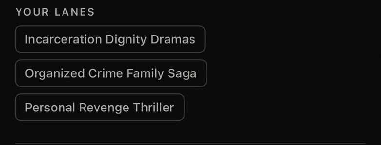
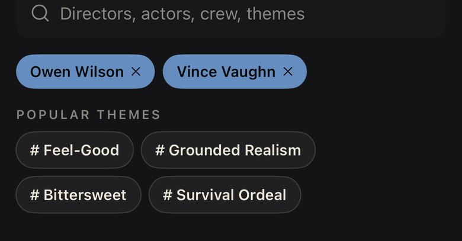

Yes, lanes and theme tags should share one style. One quiet tag for both: outlined, small, sans, with › when it opens a page. Choice chips stay a size up. Then the chosen state in blue or in cream.
1 · One tag for lanes and themes
Today lanes are square-ish boxes, themes are "#" pills, and v2 tried Bodoni italic lanes. All become the same 28pt tag.
Now · lanes

Now · themes

The one tag · film page and profile
City of God
2002 · 2h 9m · R · Drama, Crime
Directed by Fernando Meirelles
Teen Gang Delinquency›
Themes
Coming of age›Grounded realism›Ensemble cast›
Your lanes
Incarceration Dignity Dramas›Organized Crime Family Saga›Personal Revenge Thriller›